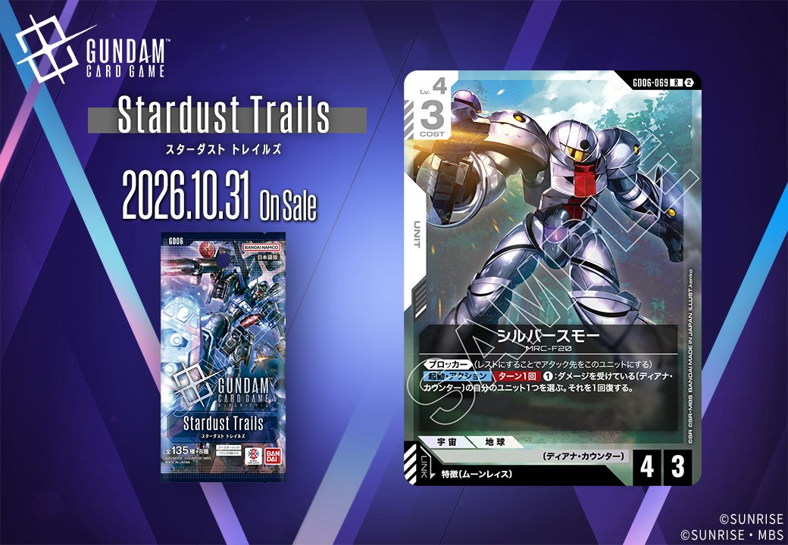

今回は拡張パック「GD06」Stardust Trailsから、白のUNIT2枚をご紹介します。「フラット」（GD06-074）と「シルバースモー」（GD06-069）は、どちらも特徴にムーンレイスを持つPILOTをリンク条件に指定するUNITです。カード名や型番などの詳細情報は、認識データに【link】および【release_date】の記載がないため本記事では触れず、判明している範囲の内容のみをお伝えします。

フラット (GD06-074)
| 色 | 白 | タイプ | UNIT |
| Lv | 4 | コスト | 2 |
| AP | 4 | HP | 3 |
| 特徴 | 〔ディアナ・カウンター〕 | ||
| リンク条件 | 特徴にムーンレイスを持つPILOT | ||
フラットはコスト2でAP4/HP3という、効果なし(バニラ)ながら数値に寄せたLv.4ユニットです。コスト2帯でAP4は攻撃面の水準が高く、HP3も確保されているため、序盤から盤面に置く頭数として扱いやすい構成といえます。実用面で効いてくるのは特徴〔ディアナ・カウンター〕で、同特徴のソレイユ(GD06-130)は【配備時】にパイロットがセットされていない相手のユニット1つを、〔ディアナ・カウンター〕/〔ミリシャ〕の味方のユニット数だけAP-するため、軽いコストで味方の数を増やせる本カードはその減少値を押し上げる役割を担えます。リンクは特徴にムーンレイスを持つパイロットで、搭載先の候補として意識しておきたい一枚です。



シルバースモー (GD06-069)
| 色 | 白 | タイプ | UNIT |
| Lv | 4 | コスト | 3 |
| AP | 4 | HP | 3 |
| 特徴 | 〔ムーンレイス〕 | ||
| リンク条件 | 特徴にムーンレイスを持つPILOT | ||
効果: 《ブロッカー》(レストにすることでアタック先をこのユニットにする)【起動】アクション ターン1回 ①:ダメージを受けている〔ディアナ・カウンター〕の自分のユニット1つを選ぶ。それを1回復する。
コスト3でAP4/HP3と《ブロッカー》を併せ持ち、白のブロッカー枠として採用率28.8%のガンダム・ルブリスと比較しても攻守のバランスが取れた一枚です。【起動】アクションはターン1回、①でダメージを受けている〔ディアナ・カウンター〕の自分のユニット1つを1回復するもので、自身の特徴は〔ムーンレイス〕のため回復対象は他のユニットに限られる点は押さえておきたいところです。〔ディアナ・カウンター〕を並べる構築であれば、ソレイユが参照する味方の数を維持しやすくなり、ブロックで受けた損害を継続的に戻せます。リンクは特徴に〔ムーンレイス〕を持つパイロットで、同特徴のパイロットとの併用も選択肢になります。
関連カード
-
 ソレイユ(GD06-130)NEW白系 — 同色・共通特徴: ディアナ・カウンター（新カード）
ソレイユ(GD06-130)NEW白系 — 同色・共通特徴: ディアナ・カウンター（新カード） -
 溢れる慈愛(GD01-118)白系デッキ内採用率38.4% (2666デッキ)
溢れる慈愛(GD01-118)白系デッキ内採用率38.4% (2666デッキ) -
 ガンダム・ルブリス(GD01-086)白系デッキ内採用率28.8% (1994デッキ)
ガンダム・ルブリス(GD01-086)白系デッキ内採用率28.8% (1994デッキ) -
 エールストライクガンダム(ST04-001)白系デッキ内採用率27.5% (1906デッキ)
エールストライクガンダム(ST04-001)白系デッキ内採用率27.5% (1906デッキ) -
 キラ・ヤマト(ST04-010)白系デッキ内採用率27.2% (1884デッキ)
キラ・ヤマト(ST04-010)白系デッキ内採用率27.2% (1884デッキ) -
 泣き虫ボウ(GD06-121)NEW白系 — リンク対象（ムーンレイス PILOT）（新カード）
泣き虫ボウ(GD06-121)NEW白系 — リンク対象（ムーンレイス PILOT）（新カード） -
 メリーベル・ガジット(GD06-087)NEW緑系 — リンク対象（ムーンレイス PILOT）（新カード）
メリーベル・ガジット(GD06-087)NEW緑系 — リンク対象（ムーンレイス PILOT）（新カード） -
 ギム・ギンガナム(GD06-085)NEW緑系 — リンク対象（ムーンレイス PILOT）（新カード）
ギム・ギンガナム(GD06-085)NEW緑系 — リンク対象（ムーンレイス PILOT）（新カード） -
 リック・ディアス(GD02-079)白系デッキ内採用率24.2% (1676デッキ)
リック・ディアス(GD02-079)白系デッキ内採用率24.2% (1676デッキ)